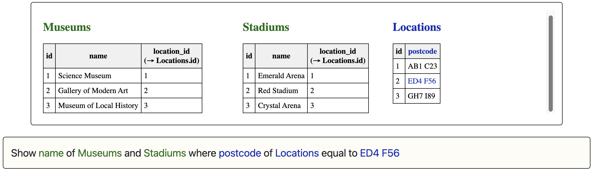
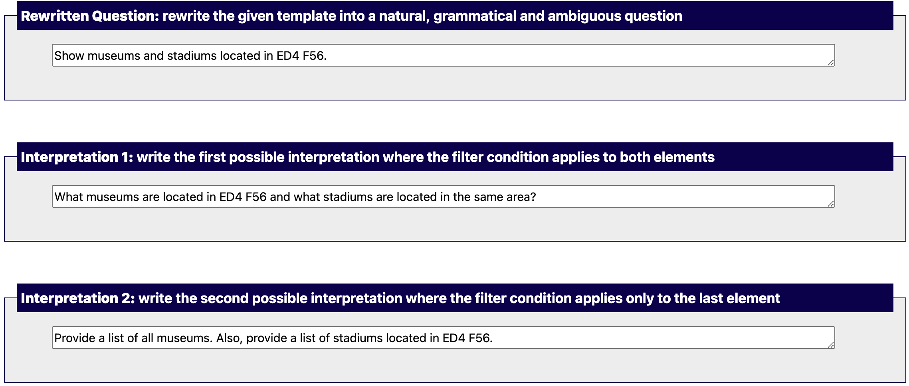

Let's consider the following task:
Ambiguity: the filtering condition (ED4 F56 postcodes) can be applied to both museums and stadiums or it might be applied only to stadiums.
Rewriting the template: you need to rewrite the tempalte into a natural and grammatical sentence (in the form of a question or request):
Interpretations: you also need to write two interpretations, which should sound natural and grammatical.
Example of a completed task:
